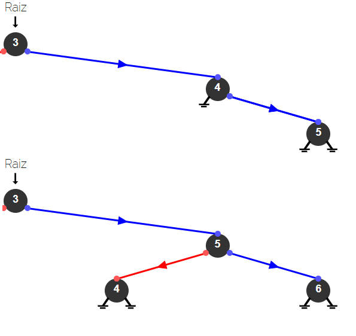

Árvore AVL
O que é uma Árvore AVL?
A Árvore AVL é uma árvore binária de busca auto-balanceada. Criada por Adelson-Velsky e Landis em 1962, ela mantém a altura balanceada automaticamente após cada operação de inserção ou remoção, garantindo eficiência em buscas, inserções e exclusões.
É chamada de auto-balanceada porque a diferença de altura (ou fator de balanceamento) entre as subárvores esquerda e direita de qualquer nó nunca é maior que 1.
Como Funciona?
Após cada inserção ou remoção, a Árvore AVL verifica o fator de balanceamento de cada nó. Caso o fator seja maior que 1 ou menor que -1, a árvore executa rotações para corrigir o balanceamento.
Estrutura da Árvore AVL
Cada nó na Árvore AVL contém:
- Uma chave.
- Ponteiros para os nós filhos (esquerda e direita).
- Um valor indicando a altura do nó.
Operações em uma Árvore AVL
As operações principais da Árvore AVL incluem inserção, remoção e busca. Após cada modificação, a árvore pode realizar rotações (simples ou duplas) para manter-se balanceada.
class AVLNode {
public $key;
public $left;
public $right;
public $height;
public function __construct($key) {
$this->key = $key;
$this->left = null;
$this->right = null;
$this->height = 1;
}
}
class AVLTree {
public function getHeight($node) {
return $node ? $node->height : 0;
}
public function getBalanceFactor($node) {
return $node ? $this->getHeight($node->left) - $this->getHeight($node->right) : 0;
}
public function rotateRight($y) {
$x = $y->left;
$T2 = $x->right;
$x->right = $y;
$y->left = $T2;
$y->height = max($this->getHeight($y->left), $this->getHeight($y->right)) + 1;
$x->height = max($this->getHeight($x->left), $this->getHeight($x->right)) + 1;
return $x;
}
public function rotateLeft($x) {
$y = $x->right;
$T2 = $y->left;
$y->left = $x;
$x->right = $T2;
$x->height = max($this->getHeight($x->left), $this->getHeight($x->right)) + 1;
$y->height = max($this->getHeight($y->left), $this->getHeight($y->right)) + 1;
return $y;
}
public function insert($node, $key) {
if (!$node) return new AVLNode($key);
if ($key < $node->key) {
$node->left = $this->insert($node->left, $key);
} else if ($key > $node->key) {
$node->right = $this->insert($node->right, $key);
} else {
return $node;
}
$node->height = max($this->getHeight($node->left), $this->getHeight($node->right)) + 1;
$balance = $this->getBalanceFactor($node);
if ($balance > 1 && $key < $node->left->key) {
return $this->rotateRight($node);
}
if ($balance < -1 && $key > $node->right->key) {
return $this->rotateLeft($node);
}
if ($balance > 1 && $key > $node->left->key) {
$node->left = $this->rotateLeft($node->left);
return $this->rotateRight($node);
}
if ($balance < -1 && $key < $node->right->key) {
$node->right = $this->rotateRight($node->right);
return $this->rotateLeft($node);
}
return $node;
}
}
// Exemplo de uso
$tree = new AVLTree();
$root = null;
$root = $tree->insert($root, 10);
$root = $tree->insert($root, 20);
$root = $tree->insert($root, 30);
Vantagens da Árvore AVL
A Árvore AVL é ideal para cenários onde operações de busca precisam ser rápidas e frequentes, como em bancos de dados, sistemas de arquivos e dicionários.
- Busca, inserção e exclusão com complexidade O(log n).
- Balanceamento automático, garantindo eficiência.